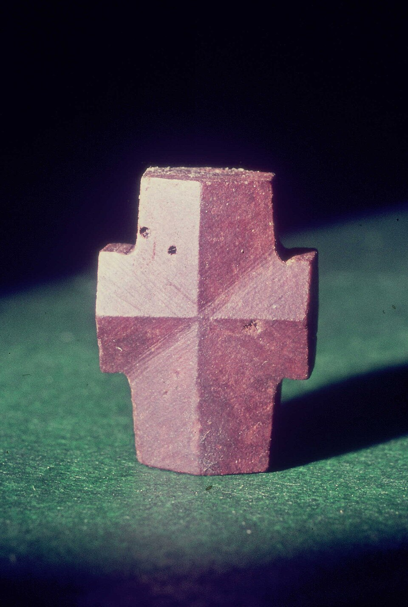
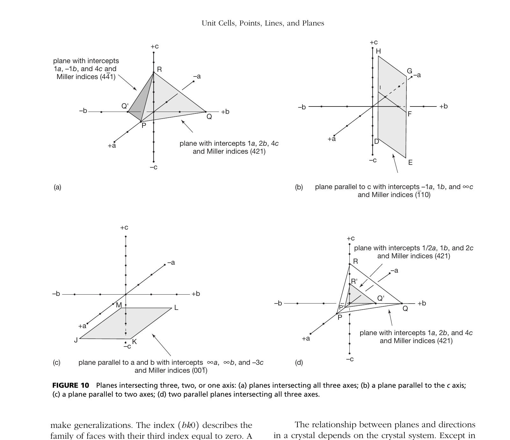
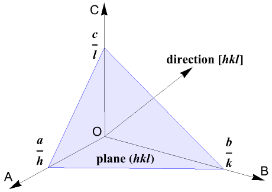
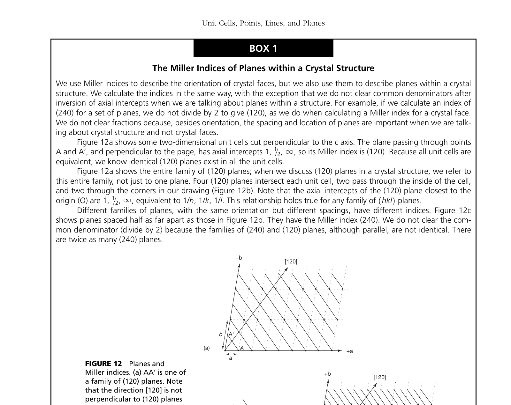
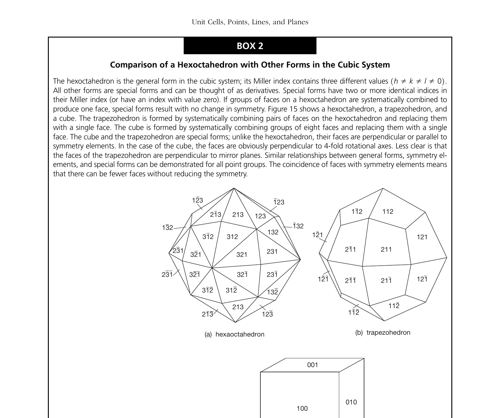

y, 4 - Seas ESS / 4.1. INTRODUCTION a Se 3 “Crystallography” is a branch of mineralogy which deals with the study of crystals and the laws that gover their growth, external shape and intern al structure, Most minerals are crystalline while a few are amorphous (non Ss talline). When minerals crystallize under favourable conditions, they take: the form of crystals, Thus the crystal form of a mineral reflects its orderly ‘ internal arrangement of atons. a Crystal. A solid which possesses a regular geometrical shape, is called a “crystal”. A crystal is bounded by faces which lic parallel to the plan es of atoms in the crystal structure, In addition to faces, crystals contain edg es and solid angles arranged in (e017 ‘4 i regular order. “Edges” are formed where two adjacent a Taces méet and a “solid / " angle" is formed where ri three or mare edges mect, vi fe 4 Zone. In many crystals j * group of faces are arranged a [oie in such a manner that their be, intersection edges are Paral- ee lel to each other. Such faces mS J constitute a “zone”, A line a which passes through the a Centre of the crystal and lie ir Paralle! to the line of the face ‘ é a intersections is called the Fig. 4.1, Crystal zones and zone axis, “zone axis”. In Fig. 4.1 the faces 1 i; Cand Yin another. The lines loosed i sr ope: zone; and q ST ee,.
cRYSTALLOGRAPHY a 42. UNIT CELL Faces of a crystal bear a definite relation to the i. of atoms. This structural pattern consists of mile ae group of atoms linked in a fixed spatial relationship to one another. C cay ie formed by the repetition of a unit in three dimensions. The “wiih iz therefore, is a tiny building block of crystals. It represents the small ‘ volume which possesses all the chemical, physical and geometrical P a ties of the crystal. Different mineral species have different types of ini rel The shape and size of unit cells of minerals are determined by x-ray diffraction techniques.:
4.3 Interfacial Angle


In a crystal, the angle between adjacent faces is called “interfacial angle”. Because crystal faces have a direct relationship to the internal structure, it follows that the faces have a definite rclalionship to each other.
This relationship is expressed by “law of tle constancy of interfacial angles” which states that “the diterfacial angles between cor- @ responding faces are (TE > constant for all crystals of a given mineral”. INTERFACIAL, Interfacial angles are ANGLE ‘measured either with a con-: ‘act goniometer or a reflecting goniometer. Contact *.
goniometer is a simple Fig. 4.2. Comlact geniometer. device which consists of a. barista ‘ -pivoted metal arm, called pointer. This arm slides over @ Ja Re and measures the interfacial angle between (wo adjacent faces of a crys as shown in Fig. 4.2,.
4.4. CRYSTALLOGRAPHIC AXES rifts ‘ In order to describe the faces and symmetry of Sad ier or four reference axcs are established. These imaginary ‘id te the imef= called “crystallographic axes” and are generally ue ae axes are the Section edges af major crystal faces. In fact, crystal ani cell and their feference fines which run parallel to the edges of ve es, Thus when, We lengths are proportional to the lengths of the unit om a nally pepe aa that the three axes of the cubic system baba voit cell are equal and cular, it means that the three edges of the ‘ledges measured in the Mutually perpendicular. The lengths of the unit ¢¢: = oe meme AMEE SG ETS ARS 455 PRINCIPLES OF ENGINEERING gEo), direction of crystallographic axes. are called “unit lengths" and are en
4.4.1 Lettering of Crystallographic Axes:
Normally the vertical crystallographic axis is labeled as ‘c’, the right axis as ‘b" and frant to back axis as ‘a’. Ifthe axes are of equal lg they are all labeled as ‘a". For example, in cubic system the three eq al are referred 10 aS Gy. 43 and dy a One end of each axis is designated as plus and the other end as my The front end of a-axis, the right hand end of b-axis and the upper c-axis are positive while the opposite ends are negative (Fig. 4,3). When the crystallographic axes are not at right angles, the ane tween the positive ends of b and ¢ is referred to as ot (alpha), betwe and = cas B (beta) and between + and + b as y (gamma) (Fig. 42)), 442, Axial Ratio 4 The “unit lengidis” of crystallographic axes are length of the! ini edges. These are expressed as 4, band c. For example, for the orthorh mineral sulfur, the unit cell dimensions are: ¢ = 10,47 A°, b = 12.874 ¢=24.29 A°. Taking 6 as a unit of measure, we can determine the I ' gandc in terms of b. The ratio determined in this y ' a:b: c 0.813: 1: 1.903. This ratio which expresses the relative len the unit cell edges along crystallographic axes is called “axial ratio + 4c H ii Tu 4 R -a 4 a Zoo va a Sa +h a re. pate +a Xp iv oe 7 oo) A seal es FOR, eeyeallopaipits: 4S. Pa, ‘epts, (b) Miller indices.
« 45. PARAMETERS fi The “parameters” made by the crystal face on he ae ny Pe defined ax the ta Pressed in terms of the ae ¢ crystallographic axcs. Parameters af! Where a, band care the unit leegthe fe shown in Fg ieths. A crystal face POR intercepts the aa ESL Rr 4 gavstALLoGRAPHY | ances of 3a, 3b, and 2c respecti i glistances of 34, pectively from the origi.
ae pe 3a: 3B: 2c. The form whose face is ea ee Parameters i pavers is called a “unit form". 0 be making unit 1 46. CRYSTA LLOGRAPHIC NOTATION The slopes of crystal faces can be described with imercepts they make on the crystallographic axes. The ee i“ the f commonly used for expressing the intercepts of crystal ce: ae parameter system of Weiss, and (ji) index system of Miller. are: (i)
4.6.1 Parameter System of Weiss i
In this system the parameters of a crystal face are write 7 ' the notation of the crystallographic axes. For example, a aaa i araxis at unit distance, b-axis al a distance of 2 units and lies parallel to ie i c-axis, iS Weiss symbol is written as follows..!
4.6.2 Index System of Miller f
In the index system of Miller, the notations of crystal faces are calle 1 “Miller indices”. The Miller indices of a face consists of a series of whole ll aoenpers that have been derived from the parameters by taking their reciprocals and then by clearing of fractions. The numbers of the Miller indices are always written in the axial order a, b and c, For example, let us consider the i crystal face PQR shown in Fig. 4.3 (a). Its Miller indices are determined as follows.
(i) For the face POR which cuts the positive ends of the crystal- i lographic axes, the parameters are 3a, 3b and 2c respectively. Since the intercepts are always written the axial order a, b and c, i the letters themselves are omitted and the parameters are written (ii) The reciprocal of the parameters are laken which leads to 1/3, 3 4 and 1/2 respectively. i (iii) The fractions are cleared by multiplying all by 6 and the Miller symbol for the face PQR is obtained, which is 223". The Miller 1 indices of the octahedron is shown in Fig, 4.3 (6).
For faces that intersect negative ends of crystallographic axes, a bar is placed over the corresponding index figure. For example, the index ai suggests that this face intercepts the c-axis on the negative end. Faces which q are parallel to an axis, cut that axis at infinity. For example, if the intercepts of a face are 1, 09, oe, its Miller symbol will be 100. sacle tise i A Miller symbol which is not bracketed, strictly denotes _ le oat while the bracketed symbol represents all the faces of a lag a 1 symbol for a face that cuts all the axes at different lengths, 1S hexagonal system it is “hkil”.
ze a etal, the Miller indices could Itimay be noted that fer given faces of a crystal, eters va: always be expressed by simple whole numbers or zero. This is known as. th e 5: “law of rational indices”.: a “form” consists of a group of crystal faces all of which have the s ame relation to the elements of symmetry. The number of faces in a form is i determined by the symmetry of the crystal class, Miller indices may be used. ff to represent forms and they are then enclosed in brackets. a ie 4.7.1. Closed and Open Forms 4 Bea A “closed form” is that whase faces enclose space and can exist along peel « The cube and the octahedron in the cubic system are both closed form: Faces of an “open form" do not enclose space. Ina crystal an open form i always occurs in combination with other forms. An expauple of open fon is prism. q
4.7.2 Holahedral and Hemihedral Forms j
Ina crystal system, euch form of the normal class is called “holohiedi is form”. This form contains all the possible faces that have similar relation the elements af symmetry, However in the lower symmetry classes there at some forms which contain half the number of {aces found in the correspond ing holohedral form. Such a form is called the “hemihedral form”. Tt mi H __ benoted that to account for all the faces of the holohedral form, two simmil 3 hemihedral fonns exist. They are called “positive” and “negative” respec; | tively. For example, in the cubic system, the tetrahedron is the hemihedral ) 7” of octahedron. The positive and negative tetrahedron are shown in Fig
4.7.3 Hemimorphic Forms a
8 In the lower syrninetry classes of some systems, there are some cry! ‘tine forms in which faces occur only on one end of the vertical crystullographi¢ axis. Such forms are called “hentimorphic forms”. Obviously crystals with i az — tay. (ey) a f Fig. 4.4. Tourmaline crystal showing F homens. Fig. 4.5. Enantiomorphism.
(a) Left hand crystal of quartz,. () Right hand crystal of quartz. he! a CRYSTALLOGRAPHY 141 H jemimorphic forms, such as tourmaline, have no centre of symmetry (Fig. 4.74. Jinantiomorphous Forms i Crystals which do not possess plane and centre of symmetry, contain a! forsn that occurs in WO positions and which are mirror images pf each other forme wo postions are related in the same way ns right and teft hand and, are nal interchangeable. Such a form in called “enantiomorphous form: (Fig.
4. SYMMETRY ELEMENTS 1 Every crystal possesses & certain symmetry, Symmetry elements arc used to describe this symmetry. Three clements of symmetry can be recognized in a crystal, These are + (i) plane of symmetry, (ii) axis af synumetry, and (if) cenue ‘of symmetry.
Plane af Symmetry. A plane of syminetry is an imaginary plane which ativides a crystal into bwo halves, each ‘of which is the mirror image of the other [Fig. 4.6 (a) and (b]. A cube has nine planes of symmetry. Peay J oéa 4 bey a!
Jesh. SEF feat — a MEY “ONY fy LK Ass of vA je P rahi / a xX ry one 1 tes ss ay i Lae £ as SH We if
Centre of Symmetry. If each face in crystal is duplicated by a similar” parallel face on the opposite side, it is said to have a centre of symmetry”
ALLOGRAPHY cnyst! P 4s (») Monoclinic System. In the crystals of this system, there are three tincqual crystallographic axes. The ‘a" and ‘c’ axes are inch || to each other al an oblique angle and the °b” axis is pectic anes i | & fe tho plane of the two [Fig. 4.19 (a). coor Ta (oip Triclinie System. There are Ures ungqua axes all int ii oblique angles [Fig. 4.21 (a)]- Imre | Hi ey 4.40, CUBIC OR ISOM ETRIC SYSTEM i iB Son of the rmost-common minerals tht erste in the ube system ‘a!. arc galena, garel, uorite and magnetite. 1 } yh Crystallagraphic Axes. Crystals of the cubic system are referred to | ot three mutually perpendicular equal axes [Fig 4.7 (ap). These axes are \ 1 interchangeable and are designated ay ( and 5. | Classes. There auc five classes in the cubic system of these the most | “s important classes are + (iy “Galena type", (it) “Pyrite type". and (iit) } oo “Tetrahedrite type” %
4.10.1 Galena Type i we
tis the normal class of the cubic system which possesses the highest degree of symmetry.
Symmetry. The syrameiry cleanests of this class are as Follows. 1 3 axial tanith! Planes 9 1 diagonal | a! 3 crystallographic axes of 4-fold symmetry i ‘Anes 1344 diagonal axes of 3-fold symmetry!
6 diagonal axes of 2-fold symmetry A centre of symmetry:
Forms. The are seven basic forms in this class. i (1) Cube (100), This form is composed of six square faces that make i 90° angles with each other, Each fare intersects one of the crys: i « tallographic axes and is paralle! to the other two [Fig 4.7 (b)- | & Q) Octahedron (111). Octahedron composed of eight equilateral triangular faces. Each face intersects the three crystallographic; a ‘axes at equal Iengths [Fig. 4.7 (DM L: (3) Dodecuhedron (11). This form * composed of 12-chomb ine i) 1 oe faces. Each face intersects the 0 erystallographie axes equally | Po and is parallel to the third [FI8: 4.7) f 1 isi (4) Trapezohedron (hil). ‘This form is coinpasedd of 24 trapeziom \ } 1 @ shaped faces. Each face intersects One erystallographie axis atunit ' distance and the otber two at cqual multiples. The most common i. trapezohedron is (211) (Fi8- 4710. ve.
y 53 es oe Hii’ 3 a iD. sccncaaiacaamslie 144 PRINCIPLES OF ENGINEERING GEOLOqy a 2 ei P cc) q (cy) se ‘ a & oo
4.10.2 Pyrite Type a
Symmetry. The symmetry elements of this class are us follows. Plane 3, axial a Ares ff crystallographic axes of 2-told symmetry diagonal axes of 3-fold symmetry 4 A centre of symunetry.
Forms. The ii a ‘ ce and the “diploi enone forms of the pyrite lype are the “pyritohedron 1. Pyritohed is form i: = ne coi (ho). This form is composed of 12 pentagonal faces. Each face intersects one axi. i is al axis al unity, the second axis CAYSTALLOGRAPHY 145 some multiple of unity and is parallel ta the third. The most common pyritohedron is (210) [Fig. 4.8 (a).
There are two pyritohedrons: (i) positive (210) and (ii) negative (120). A rotation of 90° about one of the crystallographic axes brings the positive pyritohedron into the negative position. the positive and negative pyritohedrons together forms 24 faces of the tetrahexahedron of the normal class.: Grey Gat = Ley let (a (ay wees): Ax Fig, 4.8. (2) Pyrilohedron, (b) Diploid, (c) Positive tetrahedron,.(d) Negative tetrahedron. 2. Diploid (hkl). The diploid is composed of 24 faces thul correspond to one-half of the faces of the hexoctahedron of the normal class. Each face intersects the axes at unequal distances. A common diploid is (321) [Fig. 4.8 (6)]. There are lwo diploids: i (i) positive (321), and (fi) negative (312). The positive and negative forms together comprise all the faces of the hexoctahedron of the normal class.
In addition to the pyritohedron and diploid, the other forms such as cube, octahedron, dodecahedron, trisoctahedron and trapezohedron, are also found in the. pyrite type class. These forms arc geometrically similar to the normal class but they show a lower symmetry due to the presence of striations and etch marks, ~ -
4.10.3 Tetrahedrite Type
Symmetry. The symmetry elements of this class are as follows. Plane 6, diagonal mien) 3 crystallographic axes of 2-fold symmetry 4 diagonal axes of 3-fold symmetry = No centre of symmetry. ES t Forms. The typical forms of this class are as follows. ‘ " i ded by four faces each of 1, Tetrahedron (111). It is a solid bounded b tg which is an equilateral triangle. Each face intersects the crystal}. lographic axes at equal lengths. There are two tetrahedrons: (jj positive (111) and (ii) negative (111) [Fig. 4.8 (c) and (d)).
2. Tristetrahedron (hil). This form has 12 faces. Its faces cor respond to one-half of those of the trapezohedron of normal class, Each face intersects one axis al unity and the other two at equal multiples, The most common tristetahedron is (211) (Fig. 4.9 (b)]. There are two tistetrahedrons: (i) positive (ill) and (ii) negative (Hill). q ie a
4.1L. Zircon Type Symmetry. The symmetry elements of this class are as follows. I horizontal Planes 5 {i vertical I vertical axis (crystallographic) of 4-fold symmetry Axes 5 | 4 horizontal axes (2 crystallographic and 2 diagonal) of 2-fold symmetry e - Acentre of symmetry.
Forms. The typical forms of this class are as follows.
1. Basal Pinacoid (001). This form is composed of two horizontal faces which are parallel to the plane of horizontal axes (Fig. 4.11).
2. Prism of First Order (110). This form four rectangular vertical faces. Each face intersects the two horizontal crystallographic 4 oor oot re] ae shee ‘No Wo!!
(Ay ca) (cy
4.12 Hexagonal System,
‘The common minerals that ¢ = apatite, quartz, calcite, dolomite sod eas i the hexagonal system are beryl, Crystallographic Axes. a: idee in fous ake OF me = crystals in the hexagonal system are i ‘4v 42 and a;) are of equal length. They CRYSTALLOGRAPHY ia fie in the horizontal plane with angle of 120° between the positive ends, The fourth axis is vertical and is either longer or shorter than the other axes [Fig. cases 74) EAI SL +92 rai Into aus |% rite | i ize Pee size 2130 Fig, 4.13. (a) Hexagonal crystal axes, (2) First order hexagonal prisons.
(c) Second order hexagonal prisms, (@) Dihexagonal prisms.
Classes. The two important symunetry clusses of the hexagonal system are: (i) “Beryl type” and (ii) “Calcite type”. 4.12.1, Beryl Type Beryl type is the normal class of the hexagonal systerb. It shows the highest degree of symmetry, Symmetry, The symmetry clements of the Beryl type class are as follows.
a! acer State 1 horizontal 1 vertical axis of 6-fold symmetry Arey { 6 horizontal axes of 2-fold symmetry A centre of symmetry.
Forms. The typical forms of this class are as follows.
1. Basal Pinacoid (0001). This form is composed of two horizontal faces which are parallel to the plane of horizontal axes (Fig. 4.13).
2. Prism of First Order (1010). This form has six vertical faces,: Each face intersects two of the horizontal crystallographic axes equally and is parallel to the third [Fig. 4.73 (b)]. ’ 3. Prism of Second Order (1120). This form has six vertical faces 4: Each face intersects two of the horizontal axes equally and the 3 intermediate horizontal axis at one-half this distance (Fig, 4.); 4 (ey). Be 4. Dihexagonal Prism (/ik7o).. This form is composed of 12 vertical * faces. Each face intersects all three horizontal axes at different Jengths. A common dihexagonal prism is (2130) | Fig. 4.13 (dy) 5. Dipyramid of First Order (oi). This form is composed of 12 isosceles triangular faces. Each face intersects (wo of the hori 200 tal crystallographic axes equally, is parallel to the third and cuty the vertical axis. Theré arc various dipyramids depending on the inclination of the faces (o the c-axis. The symbol of the unit to m.
6. Dipyramid of Second Order (hh2hl). This form is composed of 12 isosceles triangular faces. Each face intersects two horizont 1 axes equally, the intermediate horizontal axis at one-half his distance and also intersects the vertical axis. Acommon bipyramid j of second order is (1122) [Fig. 4.14 (b)].: AN \, wi air ‘oii j ie aw aw [es] 4
(a) First order, (6) Second order, (c) Dihexagonal. a 7, Dihexegonal Dipyramia (Aki). This form is composed of 26 triangular faces. Each face intersects all three horizontal axes at — different Jengths and also intersects the vertical axis, A common — hexagonal bipyramid is (2131) [Fig. 4.14 (e)
4.12.2 Calcite Type ‘
Symmetry. The symmetry elements Of this class are as follows. a Planes 3 vertical am aves {! vertical axis of 3.fold symmeuy be J horizontal axes of 2-fold symmetry ¥ cRYSTALLOGRAPHY H ‘orms. The ¢ ical forms of thi 1 ceaterohedron. e this class are the rhombohedron and the i: recente I There are two thombobedrons: (i) posi- | 1 mete hand (i agave (oi. Tis forms cpred fi i, faces, of which ' » three faces al the ton 1 top alternate with { y three faces al the bottom. Each face i intersects two of H the horizontal is aT axes equally, is 4 ® a parallel to the Fig. 4.15. (a) Positive rhombohedron, 1 third and also in- (b) Negative rhombohedron tersests the vertical axis. Various thombohedrons are possible! depending on the inclination of the faces to the c-axis. The unit form of the positive } rhombohedron is (1011) while that of nega- ai tive rhombohedron is (0111) (Fig. 4.15 (a) i and (b)].
2. Scalenohedron (hkif). There are two scalenohedrons: (i) positive (hki), and (ti) q negative (kiitl). This form is composed af 12; triangular faces. Each face isa scalene Wi- I angle. Each face intersects all there horizontal axes at different lengths and also meels the vertical axis. A.common positive Fig. 4.16 scalenohedron is (2131) (Fig. 4.16) sod ils scalenohedron complementary negative scalenohedron is The basal pinacoid, prism of first order, prism of second pat dihexagonal prism and bipyramid of second order which are present in Ht beryl type are also found in this class, but these have a lower symmetry. i 4.13, ORTHORHOMBIC SYSTEM: The common minerals that crystallize in the orthorhombic system are Baryte, olivine, andalusite and topaz. fi Crystallographic Axes. Crystals belonging 10 the onhorhombi are referred to taree unequal, mutually perpendicular Loe Et shorter is called “brachy axis” andl the ‘p’ axis being longer '$ called “macro 1 mance Rtas ACO: sec = 2 at, t 4 w cay P
A centre of symmetry.
Forms. The typical forms of this class are as follows.
1. Pinacoids. A pinacoid is composed of two parallel faces each which intersects one crystallographic axis and is parallel to d other two, Pinacoids are of three type. F (i) Basal Pinacoid (001), Its faces intersect c-axis and lie paralle (ii) Macro Pinacoid (100). 11 is also called “a-pinacoid” as it faces intersect ‘a’ axis and lie parallel to ‘b’ and ‘c’ [Fig. 4-d/ (iil) Brachy Pinacoid (010), 11 is also called “b-pinacoid” as il faces intersect b-axis and lie parallel to ‘a’ and ‘ec’ [Fig. 4.17 2. Prisms (hko). A prism is composed of four vertical faces. Each face intersects both the horizontal axes and is parallel to tht; vertical axis. Unit prism has the symbol (110) [Fig. 4.18 Various other prisms are possible depending on the variation J q the axial intercepts, ¢.g., (210), (120), etc, ‘ 3. Mucrodomes (hol), This form is e: Eac g composed of four faces. E face is parallel to the *b* axis (macro axis) and intersects ‘a’ afi or ate Simbol of the unit macrodome is (101) (Fig. 4.18 (O) Other macrodomes are (103, (102), (203), etc., 2 4. Beachydomes (okl). This form is composed of four faces. Each ace *S parallel to the ‘a’ axis (brachy axis) and intersects ‘b” auld cAYSTALLOGRAPHY i k > cat ‘ Le ao 5 ue F: rs cc) cp) q
4.14.1 Gypsum Type P 3
Symmetry. The symmetry elements of the gypsum type are as follows, Planes 1, containing ‘a’ and ‘c* axes. 4 Axis I, b-axis of 2-fold symmetry. ‘= ' A ccnire of symmetry. a Forms. The chief forms of the gypsum type are as follows. 1, Pinacoids. The pinacoids are of three types: (/) basal pin coid (ii) orthopinacoid and (iit) clinopinacoid. x;
(i) Basat Pinacoid (001). This form includes twa faces. Each fac 4 intersects ¢-axis and lies parallel to the plane containing; “G ( (if) Orthopinacoid (100). The orthopinacoid is also called “a Be be pinacoid”. Il is composed of two faces. Each face intersect + ‘a axis and lics parallel to the plane containing ‘b' and ‘¢? (if) Clinopinacoid (010). This form is also called “b-pinacoid r” i Itis composed of two faces. Each face intersects *b’ axis and ' Ties parallel to the plane containing ‘a’ and ‘c’ axes [Fig. 4.15 Hf q 2. Prisms (hko). A monoclinic prism consists of four faves. Ead face is parallel to the vertical axis and intersects both the horizon tal axes. The symbol of the unit prism is (110) (Fig. 4.20). iia bof} al a] | a as 2 ON w 4 Mi Fig. 4.20. Monoclinic forms in (a) Onthoclase crystal, (6) Gypsum crystal. ag Fee 3. Sey mae (hol). es are (wo hemiorthodomes: (i) posi£ ol) and (ii) negative (hol). This form j =a ‘ faces. Each face lies parallel 2 the Casi and pee Be d (i) axes: The positive unit hemiorthodome (101) has the faces om 4 Slim 101 and 101, and the negative unit hemiorthodome (1! faces 101 and 101 [Fig. 4.20 (a)), ine AD) hs the; 4, Clinodomes (okl). Aclinodome has four faces, Each face is paral- N jel to the ‘a’ axis and intersects the *b' and ‘c’ axes. The syrabol i of the unit clinodome is (O11) [Fig. 4.20 (b)]. H 5, Hemipyramids (hkl), There are 1wo hemipyramids (i) positive i (hk) and (i) negative (ik). This form has four faces only, Each! face intersects all three crystallographic axes. Examples of posi- i tive and negative hemipyramids are (321) and (321) respectively 4.15, TRICLINIC SYSTEM ‘The common minerals that crystallize in the triclinic system are axinite, albite, anorthite, microcline and kyanite.
Crystallographic Axes. Tn the triclinic system the crystal forms are refered to three unequal axes that make oblique angles with each other. The! angles between the positive ends of “” and ‘c’, 'c’ and ‘a’, and ‘a’ and i *b' are designated as ot (alpha), fi (beta) and *y (gamma) respectively [Fig. i 4.21 (@)). The ‘b’ axis is longer than the ‘a’ axis and these are called “macro-axis”. and “brachy-axis” respectively.
a fron roi ww ® Fig. 21. (a) Tilinieexystal axe, (b)Axinite crystal showing clinic Forms Class. “Axinite type” is the normal symmetry class of the triclinic L system,
4.15.1 Axinite Type: H
Symmetry. The symmetry elements of the axinite 'ype ae 8S follows. Planes, none i Axes, none A centre of symmet Forms, Each form of this class is made up of 10 ft) which are s She tre Of tana ‘one another and are symmetrical with reference 10 hee i eens osama 156 PRINCIPLES OF ENGINEERING GEO! OG 1. Pinacoids. The pinacoids are of three types: (1) basal pingeg * (di) brachy-pinacoid, and (iii) macro-pinacoid. 3 7 i) Basal Pinacoid (001). The basal pinacoid is also called: pinacoid”. This form has two faces. Each face intersects ‘axis and is parallel ta the other two. c.
(ii) Brachypinacoid (010). This form is also called “b-pinaco IL is composed of two faces. Each face intersects ‘b’ axis; is parallel to the other two. — (iii) Macropinacoid (100). This form is also called “a-pinacoid!
It is composed of two faces. Each face intersects ‘a’ axis an is parallel to the other two [Fig. 4.22 (b)]2. Hemiprisms, Hemimacrodomes and Hemibrachydomes. E; > of these forms include two faces. For each form there is a posil and a negative form. 4 () Hemiprism. Positive (ko), Negative (hko). i.
(ii) Hemimacrodome. Positive (hol), Negative (ial).
(iii) Hemibrachydome. Positive (ok?), Negative (ok!) * tj 3. Quarter Pyramids. Quarter-pyramids are composed of two face Each face intersects all three crystallographic axes. The variol i quarter-pyramids are: (i) positive right (Ak), (ii) positive Ie (HKD, (if) negative right (7ik1) and (iv) negative left (HR)..
4.16 Crystal Groups


In many instances crystals occur in groups. Crystal groups are of thre types: (i) crystal aggregates, (ii) parallel growths, and (éi) twin crys! tals, i! Crystal Aggregates 4 Groups of associated crystals are known as “crystal aggregates’ [f th. crystals forming the aggregate are made of onc mineral only, the aggreg is said lo be “homogeneous” and if different minerals occur in the aggregate itis termed as “heterogeneous”. Ee: Parallel Growths sagen Ho oF more crystals are grown in such a way that the crystal lographic axes of the one individual are parallel to those of the other, he grouping is called “parallel growth”. 4 Twin Crystals ‘= When a crystal shows two separate portions joined al a common ery tallogmpile plane, it is called “twinned crystal”. Geniculate win of rutile
therefore may be defined as the axis od about which a 180° rotation of one- ‘ half of the twinned crystal would con- pee < i vert it into a single crystal, oP by Composition Plane. The plane os | d an which the two halves of a twin Sy 4 i mneet is called “composition plane”. (Ey } ‘The composition plane commonly but 4 not always coincides with the twin ay) «ey H plane, In the twin crystal of rutile Fig, 4.22. Contact t - i (Fig. 4.22 (a)) the twin plane and (g) Geniculate twin of rutile, twin plane composition plane is (O11). If the (011), (6) ‘Scalenohedron (calcite) composition plane is irregular, it is twinned on (0001) called the “composition surface”.
, Twin Law. The description of the relation between the parts of a twin, i is called “nwin flaw". Tt states whether there is an axis or a twin plane and gives the crystallographic orientation for this axis or plane. i Reentrant Angles. Twinned crystals usually possess reentrant angles. “Reentrant angles” are the ‘V-shaped depressions found at the junctions A £ RANT gq [suai 4 LF i L& eT as apy \r A a ae ASS Sa
4.17.1 Types of Twinning.
(i) Contact Twins. When two halves of a twinned crystal are sym metrical with respect to the twin plane, it is called “contact twine Contact twins have a definite composition plane which separates: — the two halves and the twin is defined bya twin plane, Crystals of rutile and calcite shown in Fig. 4.22 exhibit contact twins, a (ii) Penetration Twins. When the two individual crystals appear to have penetrated one another, it is called “penetration twin”, Penetration twins have an irregular composition surface and the twin law is usually defined by a twin axis (Fig. 4.24). The ain Als q A @) us
When a twin crys- a tal is composed of a three or more NSE parts which are re- A (By a lated to one. if
4.17.2 Common Twin Laws
Cubic System. In the “galena type” class of the cubic system, the most i common twin has (111) as the twin plane. As this type of twin is very common is crystals of spinel, it is called “spine! twin” [Fig. 4.23 (b)]. H In the “pyrite type” class of the cubic system the two pyritohedrons may form a penetration win with a 90° rotation about the twin axis. The i twin plane is (O11). This twin is called “iron cross twin”. i ‘Tetragonal System. In this system the twinning on (011) is most com- i mon. A crystal of rutile, twinned according to this law is shown in Fig. 4.22 (a).
Hexagonal System. In this system important twins are found in the | class “calcite type”. Calcite crystals commonly show twinning on three twin Jaws, The twin plane may be (0001), (1011) or (0112). Fig. 4.22 (6) shows calcite scalenohedron twinned on (0001).:
Orthorhombic System. In the orthorhombic system the twinning on (10) is most common. For example, contact twin of aragonite and cyclic i! twin of cerussite are all twinned on (110).
Monoclinic System. In the monoclinic system twinning on (100) and By (001) is most common: Gypsum frequently shows twinning on ( 100) and HI the “Manebach twin” of orthoclase is op (001). Orthoclase also forms Penetration twins according to the “Carlsbad law” in which the twin axis H is the ‘c’ crystallographic axis, and the composition surface is roughly Wi Parallel to (010) [Fig. 4.24 (a). ‘Orthoclase also shows the “Baveno fwin iF in which the twin plane is (021).
Triclinic System. In the triclinic system the twinning exhibited by the ‘ Plagioclase felspars is most important. “They are twinned according (0 the ‘Albite taw” in which the twin plane is (010) [Fig. 4.25 (a) REVIEW QUESTIONS [: L. (a) What is symmetry of a crystal? Describe in brief the various enteria of! symmetry.
(h) Describe in brief the symmetry and forms of the “galena type” class of The isometric system 4 2. (@) What is “parameter” of a crystal face? Describe how is crystallographic notation done by “index System of Miller".: $ (6) Describe in brief the symmetry and forms of the “zircon ype” class of the tetragonal system. Ss i 3. (a) Define a crystal. Explain what do you mean by “interfacial angie’, “axial ratio” and “hemihedral forms”. 4% (b) Describe how is crystallographic notation done by "Parameter System of ' Weiss” 4 t 4, Discuss in brief about the syaunetry and forms of the “orthorhombic system” and “monoclinic systems”. r * 5. What are twin crystals? Explain different types of twinning. Discuss common twin laws. 4 f 6. (a) Write about the characteristic features of the crystallographic axés of all the six major crystal systems. a (6) Describe the symmetry and forms of the “axinite type” class of the triclinic system 7. (a) Write a summary of the symmetry elements of all major crystal systems.
(b) Describe the “pyrite ype" or “terrahedrite pe” class of the cubic system. ji 8. Differentiate between the “tetragonal” and “hexagonal systems”. Describe the symmetry and forms of the “calcite type" class of the hexagonal system. i
$$d_{hkl} = \frac{a}{\sqrt{h^2 + k^2 + l^2}}$$
Visual Reference Gallery (Clean Color Diagrams & Specimens)
Supplementary full-color diagrams from Winter, Perkins, Fossen, Boggs and high-resolution USGS/Wikimedia photographs replacing scanned textbook drawings.





